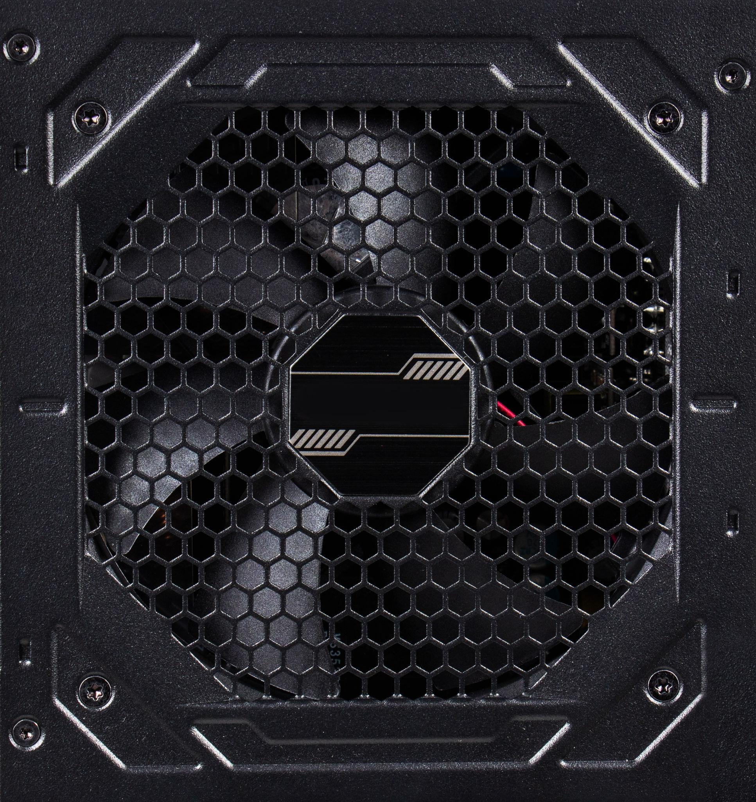
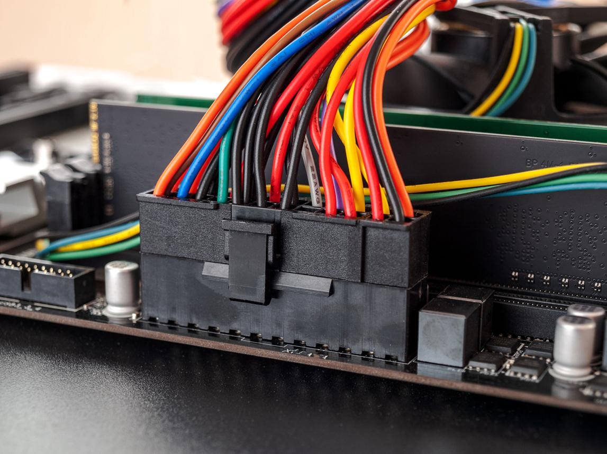
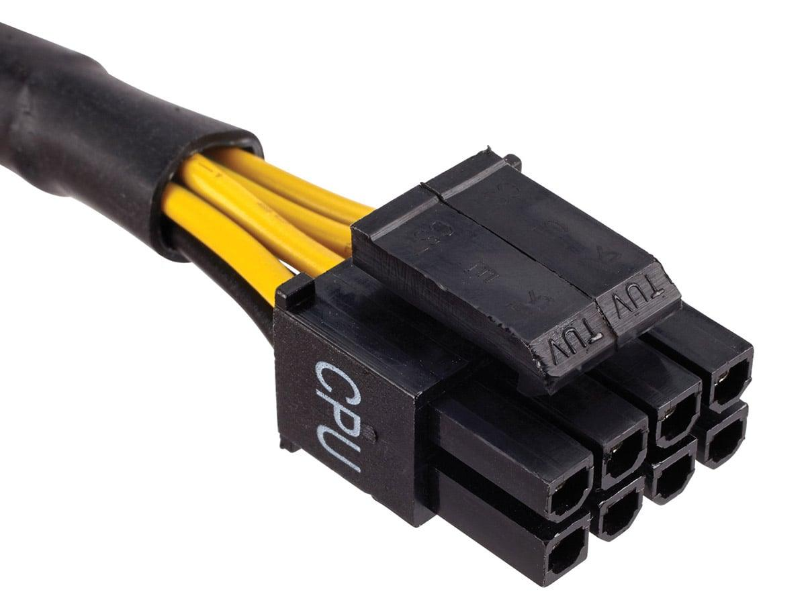
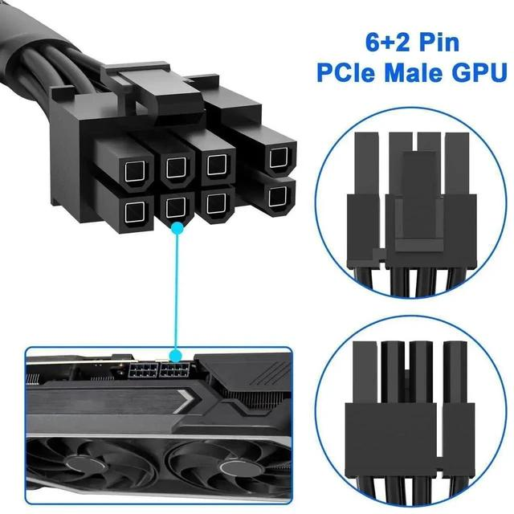
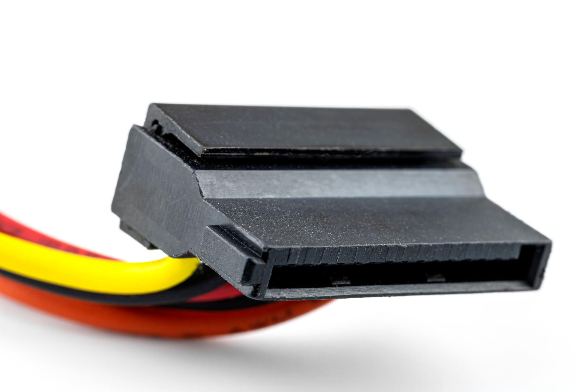
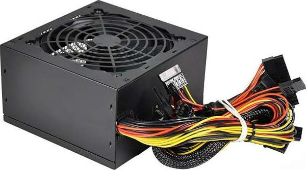
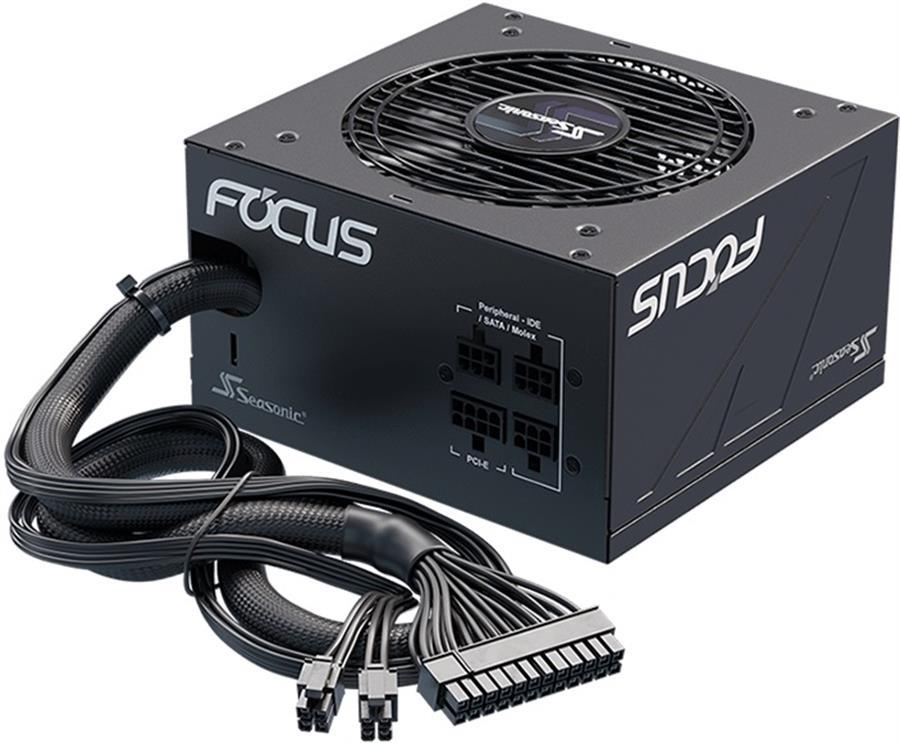
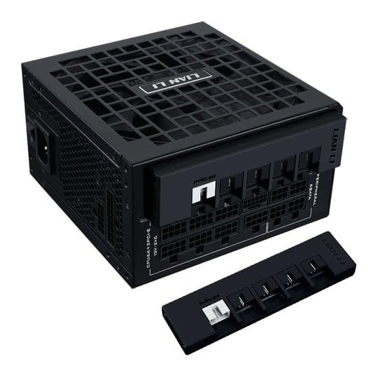

CURATED COLLECTION
電源供應器
Power Supply Unit
一、什麼是電源供應器？
電源供應器（Power Supply Unit，簡稱 PSU）是電腦內部的重要硬體設備，主要負責將插座提供的交流電（AC）轉換成電腦零件所需要的直流電（DC）。
電源供應器會將電力分配給主機板、中央處理器（CPU）、顯示卡、硬碟等零件，讓整台電腦能夠正常運作。
二、電源供應器的主要功能
- 轉換電流： 將交流電轉換成電腦零件所需的直流電。
- 供應電力： 提供主機板、CPU、顯示卡及儲存裝置所需的電力。
- 穩定電壓： 提供穩定的輸出電壓，降低電壓異常對硬體的影響。
- 保護硬體： 品質良好的電源供應器具備過電壓、過電流、短路等保護功能。
- 維持電腦運作： 確保各項硬體設備有足夠的電力運作。
三、電源供應器的主要構造

1. 散熱風扇
負責排出電源供應器運作時產生的熱量，避免內部零件因溫度過高而損壞。

2. 主機板電源接頭
常見為 24 Pin 接頭，用來提供主機板所需的電力。

3. CPU 電源接頭
常見為 4+4 Pin 或 8 Pin 接頭，用來供應中央處理器所需的電力。

4. 顯示卡電源接頭
用來提供獨立顯示卡所需的電力，常見有 PCIe 6+2 Pin，以及新型的 12V-2x6 接頭。

5. SATA 電源接頭
主要用來提供 SATA 硬碟、SSD 和部分其他設備所需的電力。
四、電源供應器的種類

1. 非模組化電源供應器
所有電源線都固定在電源供應器上，無法拆卸，通常價格較便宜。

2. 半模組化電源供應器
部分電源線固定，其他線材可依需求安裝，方便整理機殼內的線路。

3. 全模組化電源供應器
電源線可以依照需求拆卸與安裝，方便整線及維護，通常價格較高。
五、電源供應器的瓦數（W）
電源供應器的瓦數代表其額定最大輸出功率，常見有 450W、550W、650W、750W、850W 等規格。
電源瓦數 |
常見適用電腦 |
|---|---|
400～500W |
文書處理、一般家用電腦 |
550～650W |
中階遊戲電腦 |
750～850W |
高效能遊戲電腦 |
1000W 以上 |
高階顯示卡、多硬體設備的電腦 |
六、電源供應器的效率認證
部分電源供應器具有 80 PLUS 效率認證，代表產品在特定測試條件下達到一定的電力轉換效率。
常見的認證等級包括：
80 PLUS Standard
80 PLUS Bronze（銅牌）
80 PLUS Silver（銀牌）
80 PLUS Gold（金牌）
80 PLUS Platinum（白金牌）
80 PLUS Titanium（鈦金牌）
長條僅用於表示認證等級由低到高，並非實際轉換效率百分比。
一般而言，轉換效率越高，浪費成熱能的電力越少，但認證等級不直接代表電源供應器的整體品質或安全性。
七、電源供應器的重要性
電源供應器對電腦的穩定運作非常重要。
如果電源供應器品質不佳或供電不足，可能造成：
- 電腦突然關機或重新啟動。
- 執行遊戲或大型程式時發生當機。
- 電腦無法正常開機。
- 嚴重的供電異常可能導致硬體損壞。
因此，選購電源供應器時，除了注意瓦數，也應考慮品質、安全保護功能及硬體相容性。
安全提醒： 電源供應器內部可能殘留危險高壓電，即使拔除插頭也不應自行拆開外殼。
八、總結
電源供應器是電腦不可或缺的重要零件，負責將家用交流電轉換成電腦所需的直流電，並提供各個硬體設備運作所需的電力。
它就像是電腦的「能源中心」，若沒有穩定的電力供應，其他硬體即使功能再強大，也無法正常運作。
簡單來說：電源供應器負責「轉換電力、供應電力」，是維持電腦正常運作的重要設備。